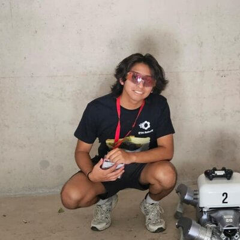

My research focuses on high-performance legged locomotion: learning-based controllers that carry over from simulation to real robots.
Education & Experience
- 2026-07 – presentRobotics Student Fellow, Robotic Systems Lab, ETH Zürich
- 2026-07ETH Robotics Summer School 2026
- 2026-02 – presentProject Director, LÁK Biped, IEEE RAS UTEC
- 2025-01 – 2026-02President, IEEE RAS UTEC
- 2022-08 – presentMechatronics Engineering (Bachelor's), UTEC
Awards
- 2025-102nd Place, IROS 2025 Volting Cup (FreeWheels)
- 2025-04Smart City Challenge, winning team (Darat Latam / UTEC Ventures)
Projects
- Obedience, a custom Duck